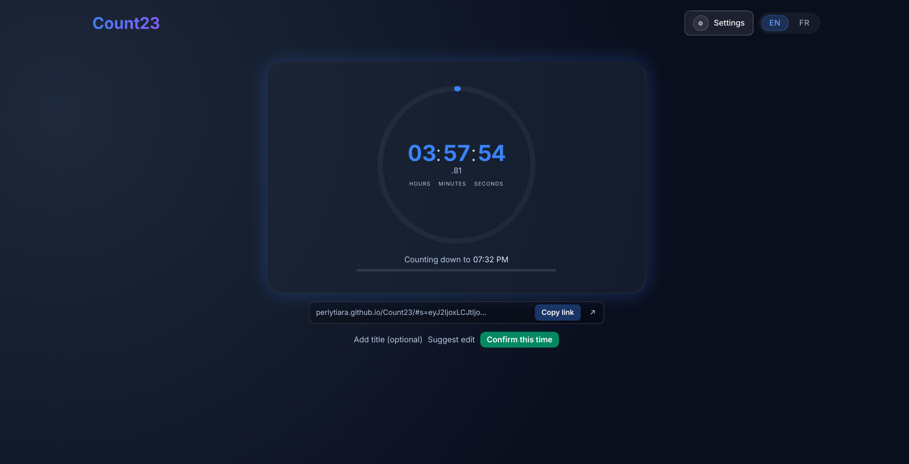

Projects / Count23
Count23
Pick a time, share the countdown, and send back an alternative if it doesn’t work for you.

The demo runs the original application. Open it in its own tab for the full browser controls.
Try it with a friend
- Choose a future time and select Start Countdown. The quick buttons add time to the date already in the picker.
- Copy the link and open it in another tab. The link carries the proposal, so the recipient can view the time in their own time zone.
- Select Suggest edit or Confirm this time. Copy the revised link to send the answer back.